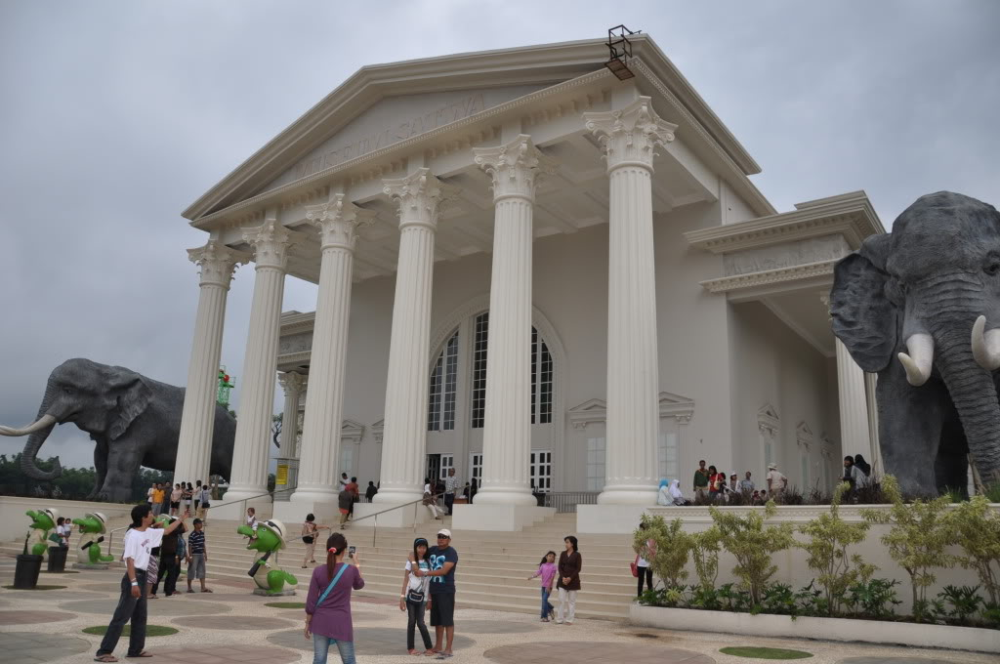
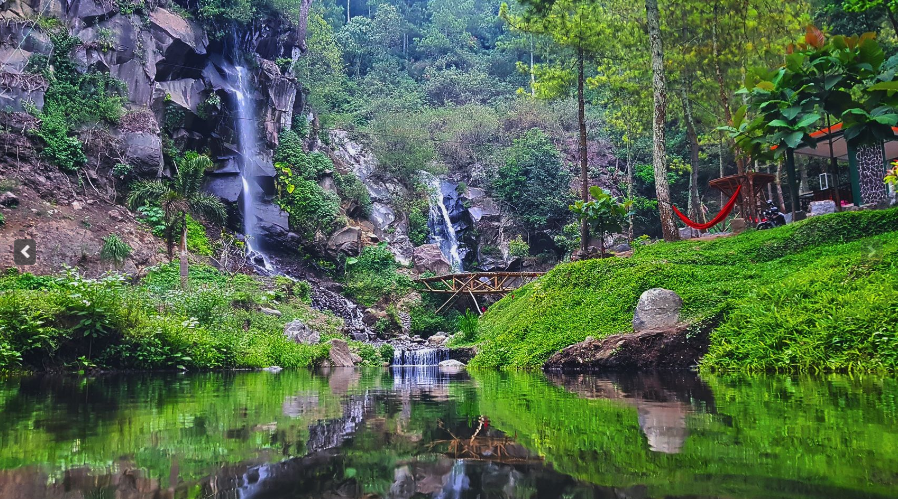
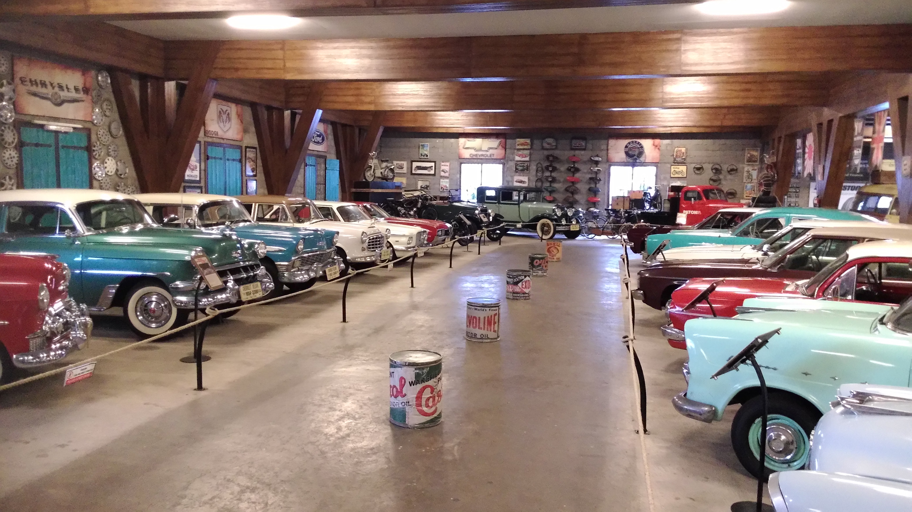
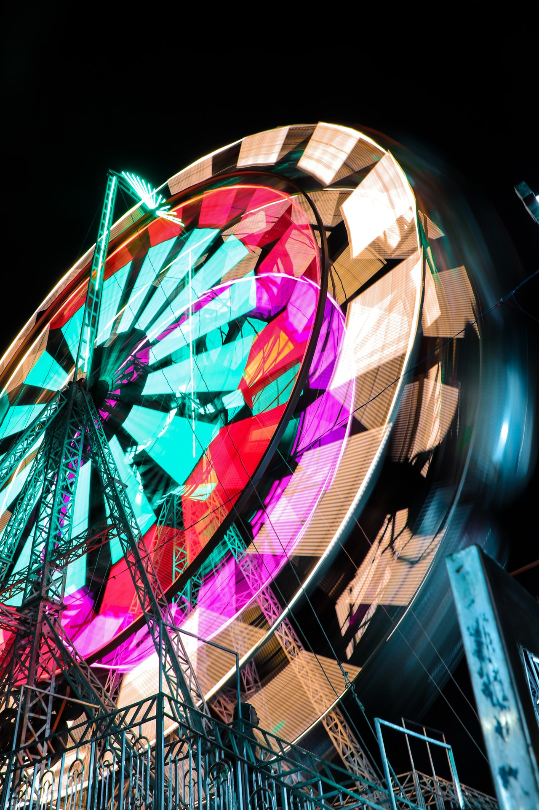
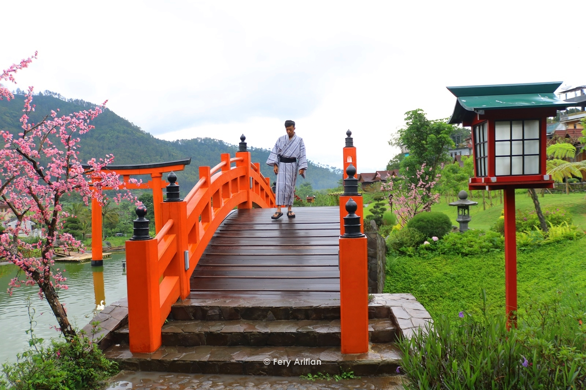
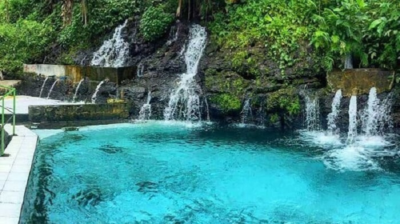
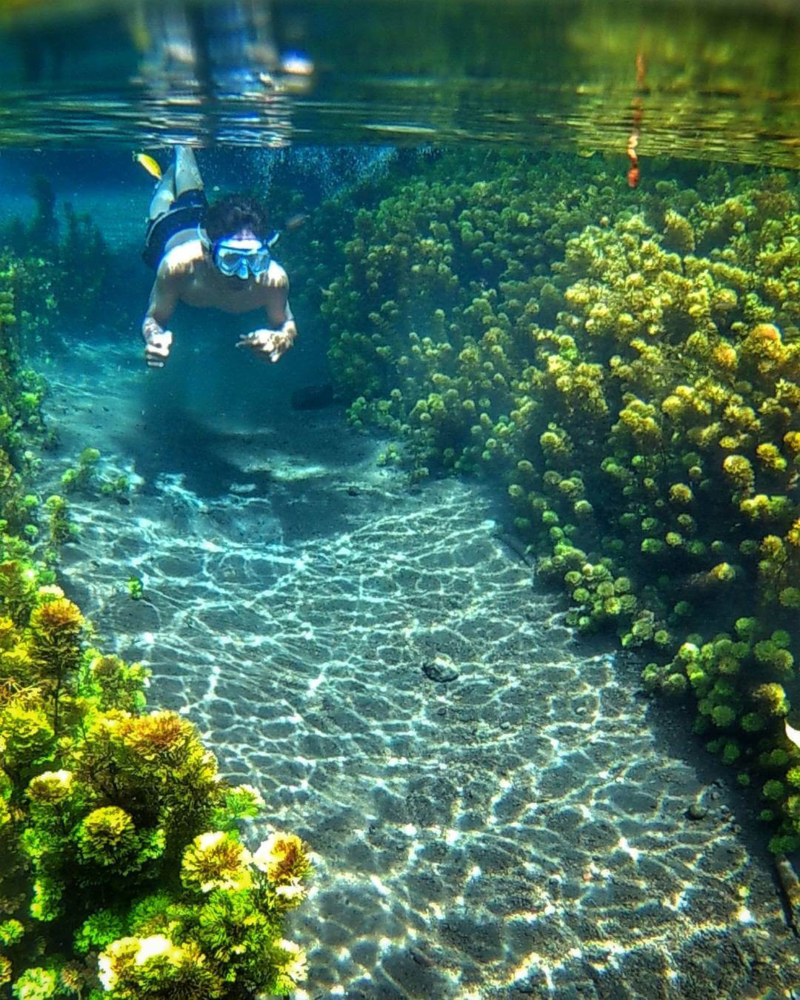
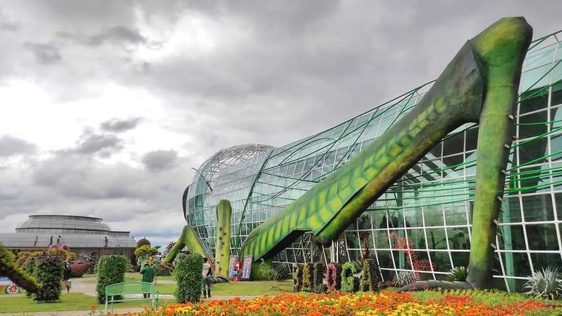
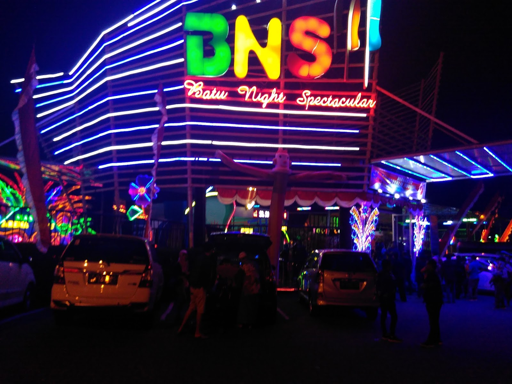

Tempat Wisata Keren !
Apa saja objek wisata keren yang dimiliki Batu ? Berikut ini beberapa wisata Batu yang bisa dipertimbangkan. Cek status operasionalnya dulu, ya !

Jawa Timur Park , biasa dikenal dengan Jatim Park atau JTP , adalah sebuah kompleks taman rekreasi dan pembelajaran yang terletak di Batu, Jawa Timur , Indonesia . Kompleks ini memiliki 3 taman, Jatim Park 1, Jatim Park 2, dan Jatim Park 3. Jatim Park adalah salah satu ikon pariwisata Jawa Timur dan salah satu taman hiburan paling terkenal di Indonesia.
Read More

Coban Putri ketinggian air terjunnya sekitar 35 meter dan mempunyai lebar kira - kira 3 meter. Air terjunnya mempunyai dua aliran air. Aliran yang pertama besar dan aliran yang kedua lebih kecil. Dibawahnya terdapat sebuah kolam yang cukup dangkal, kemudian air dari kolam tersebut dialirkan lagi ke bawah, sehingga menciptakan keindahan yang luar biasa.
Read More

Museum Angkut adalah museum transportasi yang terletak di Batu, Jawa Timur, Indonesia dan terletak di lereng Gunung Panderman, bagian dari Gunung Kawi - Butak . Museum ini memiliki lebih dari 300 koleksi jenis transportasi tradisional hingga modern. Museum ini terbagi menjadi beberapa zona yang dihiasi dengan latar belakang model bangunan dari benua Asia, Eropa hingga Amerika. Khususnya di Zona Eropa, setting tahun 1800-1900-an ala Perancis dengan berbagai mobil vintage Eropa. Museum Angkut merupakan museum segala jenis dan moda transportasi pertama di Indonesia dan Asia Tenggara .
Read More

Di antara daftar tersebut, salah satu yang dianggap paling indah adalah Alun-Alun Kota Batu. Meskipun ukurannya tidak terlalu besar, namun penataannya yang baik dan fasilitasnya yang lengkap, membuat salah satu situs berita tersebut memasukkan alun-alun yang masyhur dengan tugu apelnya ini ke dalam daftar. Alun-Alun Kota Batu sendiri dapat Anda temukan di Jalan Diponegoro, Sisir, Kota Batu, Jawa Timur. Mirip dengan layout alun-alun di Indonesia pada umumnya, di dekat pusat kegiatan masyarakat Batu tersebut juga terdapat Masjid Agung.
Read More

Satu-satunya resor pemandian air panas alami dan restoran Jepang di Batu, Malang Jawa Timur. Berlokasi ideal di tengah pepohonan pinus yang rimbun dengan pemandangan alam pegunungan di Batu, Malang. Ini adalah tempat yang ideal untuk menenangkan pikiran dan tubuh Anda. Staf kami yang ramah 24 jam akan menyambut Anda dengan minuman sambutan yang segar, dan akan membawa Anda ke vila Jepang yang sebenarnya dan juga budaya dan pengalaman mandi Jepang: 'Onsen'. Diyakini bahwa menikmati onsen akan bermanfaat bagi kesehatan Anda.
Read More

Pemandian yang satu ini memiliki banyak sekali sumber mata air, dan dapat dipastikan airnya sangat bersih juga bening banget.Sehingga kamu dapat melihat ke dasar kolamnya dengan jelas. Ditambah dengan suasana di sekitar pemandian begitu sejuk, dengan hiasan pepohonan yang cukup rindang. Kolam pemandiannya memang tak begitu besar, namun kamu dapat melakukan beragam keseruan ketika berada di Pemandian Kalireco. Pemandian Kalireco berada di sekitar pemukiman warga.
Read More

Sumber Sirah menjadi obyek wisata alam dengan sajian mata air jernih di Malang yang siap merelaksasi tubuh dan jiwa. Rasa jenuh serta penat akan sibuknya pekerjaan maupun bosan dengan suasana bising perkotaan akan hilang ketika mandi di sumber ini. Mata air dengan sajian menyegarkan satu ini dijadikan destinasi wisata anti mainstream di Malang. Banyak wisatawan yang ingin menikmati kesegaran air dari Sumber Sirah Malang untuk mengisi waktu liburnya.
Read More

Batu Love Garden merupakan destinasi wisata di Batu yang terletak di Jln.Raya Pandanrejo No.91. Kec. Bumaji,Kota Batu, Jawa Timur. Objek wisata ini memiliki luas sekitar 7 hektar, milik Jatim Park Group. Wisata ini biasa di sebut dengan Baloga. Singkatan dari Batu Love Garden di kawasan ini terdapat berbagai macam jenis bunga sekitar 600 jenis bunga yang bervariasi dan adapun bunga - bunga berasal dari luar negeri loh.
Read More
